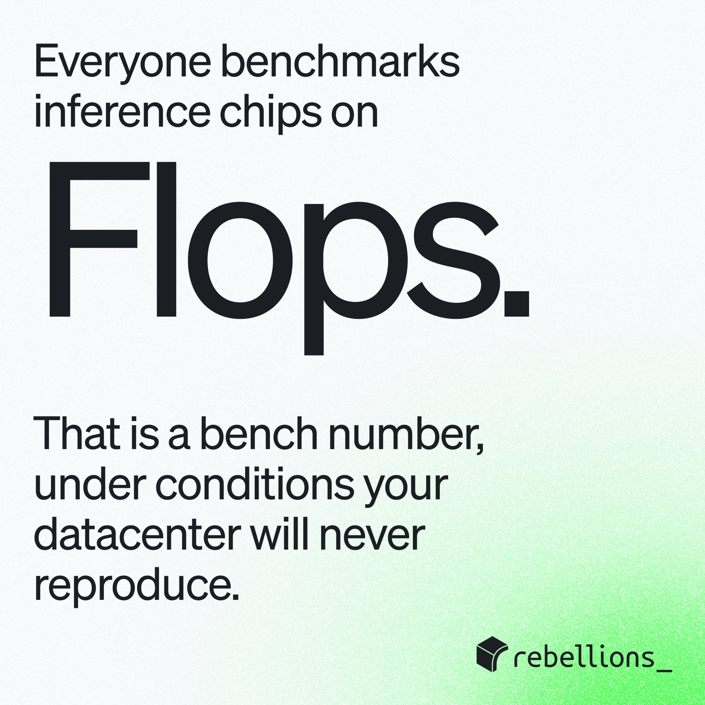
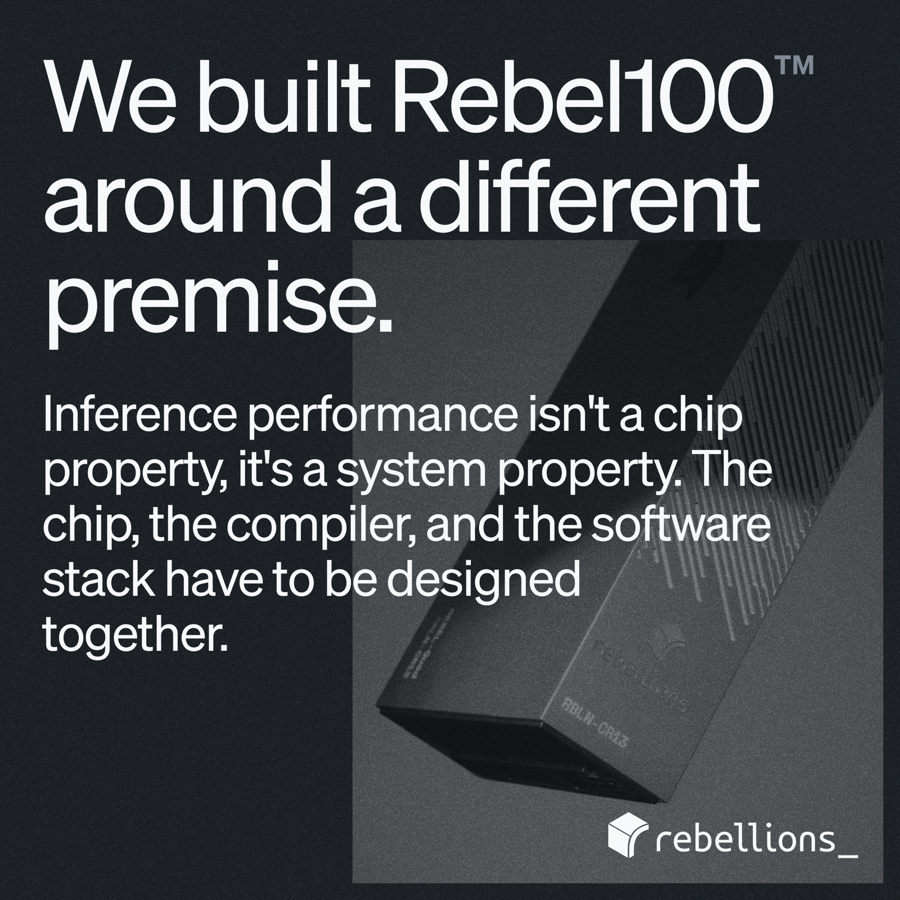
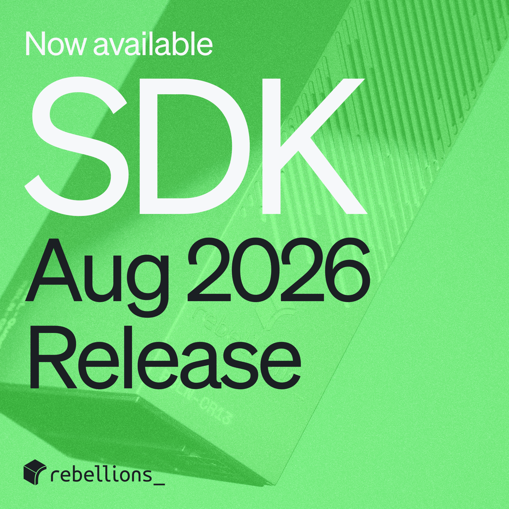
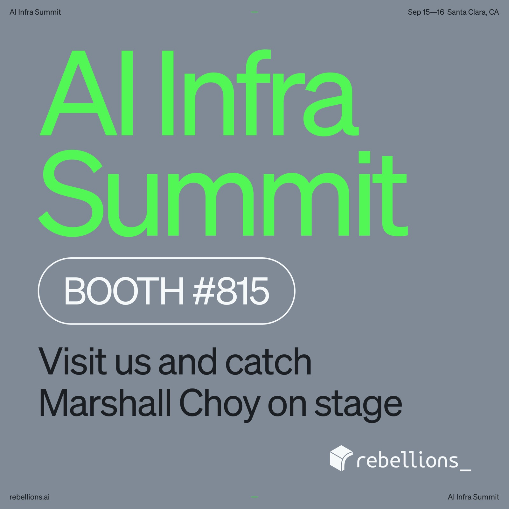
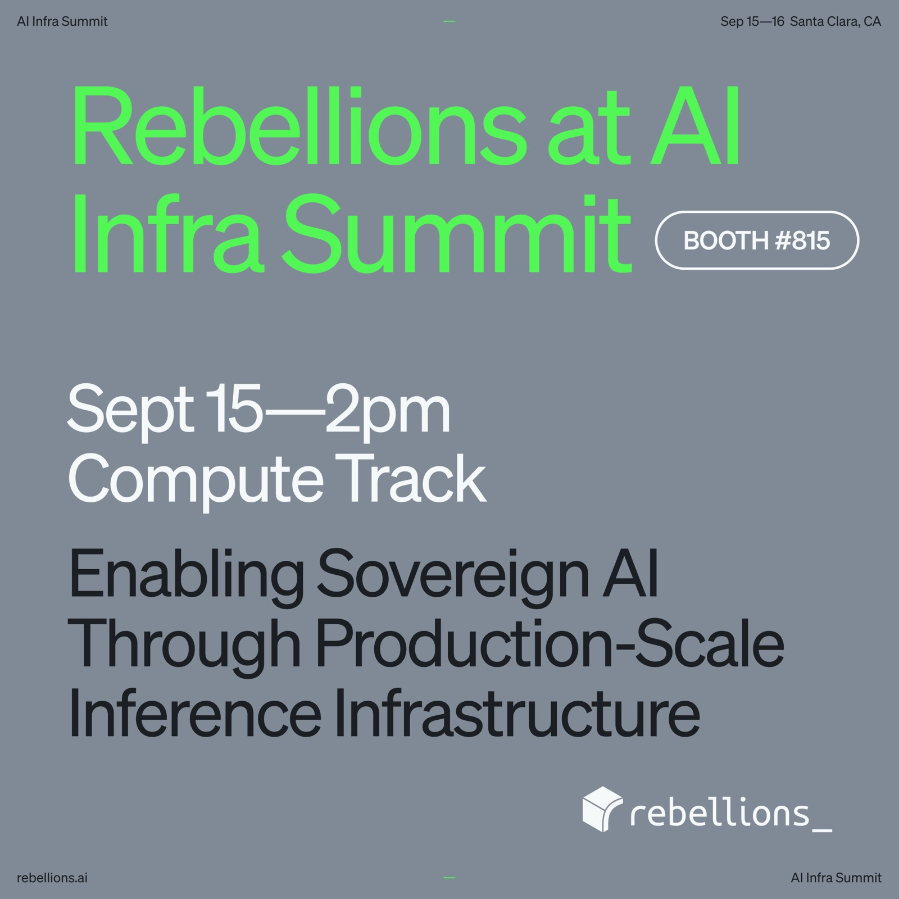

Social system
Four square templates for LinkedIn. One face, one green, and a photograph of the hardware where the post has a product to show. Published September 2026.



AI Infra Summit
A four page carousel for the booth and the Compute Track session, September 15 and 16, 2026, Santa Clara.

